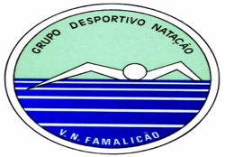
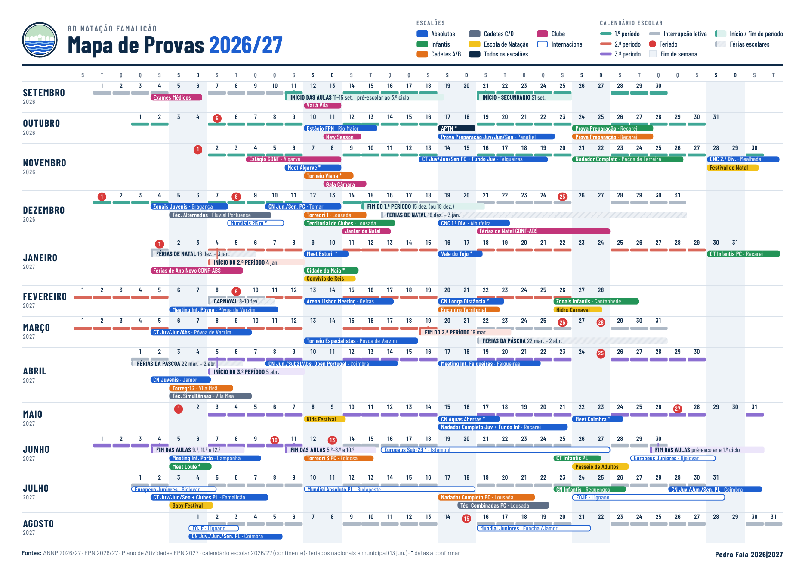
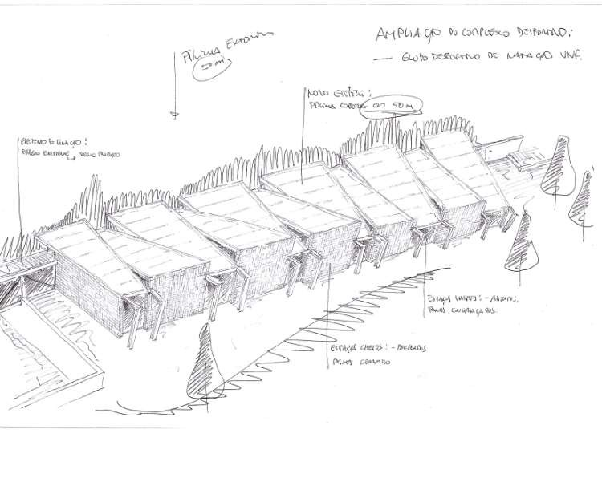

2x50 por ronda
- 1x50 com partida do bloco
- 1x50 com impulso na parede
- Saída: 1'30" (partida) / 1'00" (impulso)
- Recuperação ativa entre rondas

Planificação geral e gestão das equipas
De setembro de 2026 a agosto de 2027, com o primeiro macrociclo a terminar no Campeonato Nacional de Clubes da 1.ª Divisão.
Provas por escalão, eventos do clube e calendário escolar. Carrega na imagem para a abrir em tamanho grande.

Tempos de admissão (TAC) aos campeonatos nacionais 2026/27. Escolhe uma ou mais categorias e a piscina.
Campeonato e categoria (podes escolher várias)
Os mínimos são diferentes para piscina de 50 m e de 25 m, e não se convertem tempos entre piscinas. Têm de ser obtidos em provas oficiais, em Portugal ou no estrangeiro. Os nadadores do Regime de Alto Rendimento estão dispensados do TAC.
Das categorias e da piscina escolhidas em cima.
| Atleta | Prova | Tempo | Mínimo | Margem | Data · local |
|---|
Com base nos melhores tempos do Ranking do Clube, de 2025/26 e 2026/27, nadados na piscina escolhida. Margem: quanto está abaixo do mínimo. Quase lá: atletas a menos de 2% do mínimo, com o que falta. O ranking guarda os 10 melhores de cada prova, por isso pode faltar algum atleta: confirma sempre na FPN.
| Estafeta | Atletas | Soma | Mínimo | Margem |
|---|
A melhor equipa possível com os 4 melhores tempos individuais de cada atleta (nas Estafetas de estilos: costas, bruços, mariposa e livres, sem repetir atletas). É uma estimativa: na estafeta, os parciais com partida lançada costumam ser mais rápidos.
Índices de integração nas seleções nacionais para as competições internacionais de 2027 (Plano de Atividades PAR 2027). Escolhe a competição, a categoria e o género.
Só contam resultados oficiais homologados, dentro da janela de validade, e apenas nas provas que fazem parte do regulamento de cada competição. Quando há mais candidatos do que vagas, a FPN ordena pelos pontos World Aquatics acima da referência.
Logística das provas fora de Famalicão · pré-reservas 2026/27.
| Data | Prova · escalão | Local | Hotel | Restaurante | Estadia | Partida de Famalicão | Comitiva |
|---|
Em todas as reservas: pedir saída do hotel às 14h30 no último dia.
As 48 séries principais (main sets) do programa SprintSalo de David C. Salo, em português. Escolhe o tipo de série e a componente nas listas. Mais abaixo está a progressão de ritmo do 200 livres (Popovici) e as adaptações para o 100 e o 400, os treinos-tipo do FOCA (Francisca Martins) e as séries-tipo do GDNF por zona.
Todos os treinos: aquecimento fixo 400 + 4x100 + 4x50 (1200 m) → PreSet → Main Set → recuperação 200–400 m. O autor aponta para 3000–3500 m por sessão.
Série de ritmo de prova (race-pace) para o 200 livres, das 6 semanas até à semana da prova. O número de rondas desce e cada ronda fica mais longa, até ao 4x50 final.
2x50 por ronda
3x50 por ronda
4x50 por ronda
4x50 por ronda
4x50
Tempos de referência do Popovici. Para cada nadador, usa o ritmo do seu tempo objetivo (P200).
A mesma lógica aplicada ao 100, com objetivo de 52,00. Começa com 25 a ritmo de prova e vai juntando 50: primeiro 50 + 25, depois o 100 fracionado em 50 + 2x25 e, nas últimas 2 semanas, em 50 + 50. O número de rondas desce de 6 para 1.
2x25 por ronda
50 + 25 por ronda
50 + 2x25 (100 fracionado) por ronda
50 + 50 (100 fracionado) por ronda
50 + 50 (100 fracionado)
50: tempo/2 − 0,8" com partida e tempo/2 + 0,5" com impulso · 25: tempo/4 − 1,2" com partida e tempo/4 + 0,4" com impulso. Para 52,00 dá 25,2 + 26,5 no 50 + 50.
Para o 400, o objetivo é um 4x100 a ritmo de prova (4x100 = 400), com a mesma descida de 6 para 1 ronda. Objetivo de 3:59,00 (cerca de 59,8 por 100). As saídas estão pensadas para esse ritmo, com cerca de 30" de descanso nos 100 com impulso. Ajusta-as se o nadador for mais lento.
2x100 por ronda
3x100 por ronda
4x100 por ronda
4x100 por ronda
4x100
1.º 100 ≈ tempo/4 − 1,5" · 100 com impulso ≈ tempo/4 + 0,5", para os 4x100 somarem o tempo objetivo.
Seis treinos reais do Macrociclo III (abril a julho de 2026) da Francisca Martins, nadadora de 200/400/800 livres do FOCA, em piscina de 50 m. Mostram a passagem do aeróbio em altitude (A2) para o A3, o MPL/PL e o ritmo de prova com fato.
Preparação geral · estágio em altitude
Aquecimento
Ativação
Série principal
Relaxamento
Preparação geral · estágio em altitude
Aquecimento
Ativação
Série principal
Relaxamento
Preparação específica I · micro 41 (ter)
Aquecimento
Ativação
Série principal
Relaxamento
Preparação específica I · micro 41 (qua)
Aquecimento
Ativação
Série principal
Relaxamento
Preparação específica II · micro 46 (seg)
Aquecimento
Ativação
Série principal
Relaxamento
Preparação específica II · micro 46 (qua)
Aquecimento
Ativação
Série principal
Relaxamento
Abreviaturas: L livres · EST estilos · E1/E2 estilo principal/secundário · BB barbatanas · PB pullbuoy · PR pernas · TÉC técnica · N nado · CD costas · SP sprint · EE estilos à escolha · P palas · PVZ Póvoa de Varzim · MPL/PL máx./potência láctica · TL tolerância láctica · FG frequência gestual · DC distância por ciclo. Fonte: apresentação “FOCA · Ambição Olímpica”.
As séries que usámos nos planos semanais dos Ciclos 1, 2 e 3 de 2025/26 e do Ciclo 1 de 2026/27, arrumadas pelas zonas do GPS FAMA. As séries iguais estão juntas numa linha e as mais usadas aparecem primeiro. Escolhe a zona, o subtipo ou procura uma palavra.
Siglas: c/ saída · E1 estilo principal · L/C/B/M/E livres/costas/bruços/mariposa/estilos · Prs/Brçs pernas/braços · P20…P30 pulsação em 10" (P26 = 156 bpm) · MT melhor tempo · Máx esforço máximo · INT intervalo entre séries · Bb/Snk/Pull barbatanas/snorkel/pull-buoy · BLOCO partida do bloco · [ ] bloco de repetições. As séries "EF" sem sigla foram classificadas pela pulsação: P26–P28 = A3, P29–P30 = A4. A coluna de metros fica vazia quando o plano só tem o total do bloco.
| Tipo | Treinos | m médio | m máx. | O que treina |
|---|---|---|---|---|
| RITMO | 22 | 1 035 m | 2 100 m | Ritmo de prova fracionado (P200 / P100) com repetições curtas |
| VEL | 3 | 650 m | 800 m | Velocidade máxima (25-50) com recuperação completa |
| PARAQ | 5 | 925 m | 1 550 m | Velocidade resistida com paraquedas + contraste sem paraquedas |
| ENSAIO | 13 | 1 071 m | 1 700 m | Nado de ensaio: simulação da prova em esforço máximo |
| TESTE | 3 | 800 m | 800 m | Teste Pulse Plot (8x100 com FC) para controlar a adaptação |
| TÉCNICA | 2 | 900 m | 1 300 m | Série técnica por estilo terminada em velocidade |
| Bloco | Treinos | m médio | Ensaios | Paraq. | Comentário |
|---|---|---|---|---|---|
| Bloco 1 | 1–8 | 1 103 m | 1 | 0 | Teste inicial, ritmo P200/P100, técnica e a série mais longa do livro (treino 8). |
| Bloco 2 | 9–16 | 772 m | 1 | 1 | Volume mais baixo: ensaio 6x100 com FC (9), 1.ª série com paraquedas (10), fracionados de 200. |
| Bloco 3 | 17–24 | 1 291 m | 4 | 2 | Bloco mais exigente: maior volume médio, 4 ensaios e 2 séries com paraquedas. |
| Bloco 4 | 25–32 | 1 103 m | 3 | 1 | Teste Pulse Plot (25) e ritmo de prova com fracionados de 200 e 400. |
| Bloco 5 | 33–40 | 916 m | 3 | 2 | Ensaio 6x100 com FC (36) e velocidade pura (37, 38). |
| Bloco 6 | 41–48 | 750 m | 1 | 2 | Teste final (44) e o volume médio mais baixo: séries curtas e específicas, tipo afinação. |
Todos os treinos seguem a mesma sequência: aquecimento igual (400 + 4x100 + 4x50 = 1200 m), PreSet de pernas/braços/educativos que já sobe para intensidade máxima, Main Set específico e recuperação de 200-400 m. O autor aponta para 3000-3500 m por sessão, uma sessão por dia.
O Main Set tem em média ~1000 m (200 a 2100 m). Não há trabalho aeróbio extensivo; a base aeróbia vem da repetição diária de esforços curtos e intensos.
Metade dos Main Sets trabalha a P200 e metade inclui velocidade máxima. As repetições raramente passam dos 75 m e o 200 é treinado fracionado (3x50+50, 150+50, 75+125…).
Mais de metade das séries usa a FC para controlar a recuperação (FC23 ≈ 138 bpm; FC25 e FC27 encurtam o descanso). Cada nadador descansa o que precisa para manter o ritmo.
Muitas séries são em 3 (ou 4) rondas com descanso que diminui ou intervalo que encurta: o nadador ensaia «a última ronda é a que conta», como o 3.º/4.º 50 de um 200.
Pulse Plot nos treinos 1, 25 e 44 (cada 3-4 semanas) e ensaios 6x100 com FC nos treinos 9 e 36, sempre com o mesmo aquecimento para poderem ser comparados.
Os intervalos foram pensados para nadadores universitários em jardas: em P25 metros acrescenta ~10% às saídas. Para nadadores mais novos, a referência FC23 pode subir para FC24-25. Define os tempos objetivo (P100/P200) de cada nadador antes de começar.
Fonte: David C. Salo, SprintSalo (trad. esp.), «Entrenamientos». Os metros contam só o main set. Os intervalos foram pensados para jardas: em piscina de 25 m acrescenta cerca de 10% às saídas.
Atletas inscritos na época, por escalão de filiação, com o n.º de licença FPN e o dia de aniversário. Escolhe o género e o escalão.
| Nome | Ano | Escalão | Licença | Aniversário |
|---|
Modelo de convocatória para qualquer prova: carrega o regulamento (PDF) ou cola o programa, junta os atletas e marca as provas de cada sessão, jornada e dia. No fim imprimes ou envias por WhatsApp. As convocatórias ficam guardadas neste telemóvel para voltar a abrir.
Para passar uma convocatória para outro telemóvel ou computador.
Tens a convocatória em PDF com as cruzes? Carrega-a aqui: o site junta os atletas e marca as provas sozinho (confirma depois na grelha).
Escalões (podes escolher vários)
Toca nas quadrículas. Provas individuais: X. Estafetas: cada toque muda o número da equipa (1 a 5, como no regulamento: 1 Seniores, 2 Juniores, 3 Juvenis A, 4 Juvenis B, 5 Absolutos). Ind. = número de provas individuais do atleta.
Os 10 melhores tempos de sempre do GDNF em cada prova. Escolhe o género, a prova, o atleta, a piscina, os escalões e as épocas; os filtros funcionam juntos.
Os 10 melhores tempos de sempre do GDNF em cada prova (de outubro de 2000 a outubro de 2026). Absolutos é o ranking geral do clube. Os outros escalões são os da época 2026/27, calculados pelo ano de nascimento com a regra da FPN, para todos os tempos (idade em 2027: Infantis B 13 anos, Infantis A 14, Juvenis B 15, Juvenis A 16, Juniores B 17, Juniores A 18, Sub 21 dos 19 aos 21, Seniores 19 ou mais, que inclui os Sub 21). Podes escolher vários escalões ao mesmo tempo, por exemplo Juniores A e Juniores B. Escolhe o escalão, o género e a prova, um atleta para ver todas as suas provas, ou uma ou mais épocas para ver os tempos conseguidos nessa altura. Os filtros funcionam juntos e o lugar é calculado dentro da escolha feita (melhor tempo de cada atleta). novo marca os tempos da época 2026/27; ✓ mín. marca os tempos de 2025/26 e 2026/27 que já fazem o mínimo dos Campeonatos Nacionais do escalão 2026/27 (TAC FPN) nessa piscina; Dif. é a diferença para o 1.º lugar.
Fonte: rankings top 10 do clube (27/10/2026): top 10 de sempre absoluto e de infantis, top 10 absoluto da época 2025/26 e top 10 de cada escalão de outubro de 2025 a outubro de 2026 (falta Juniores B femininos). Pts = pontos FINA. A época 2025/26 está completa até ao 10.º lugar. Nas outras épocas só aparecem os tempos que entraram no top 10 de sempre, por isso podem faltar atletas.
As estafetas mais rápidas possíveis com o melhor tempo de cada atleta nas épocas escolhidas acima (sem épocas escolhidas, usa todos os tempos). Usa o escalão escolhido acima. Nas estafetas de estilos é escolhida a melhor combinação, com um atleta por estilo e sem repetir. Entram todos os atletas das épocas escolhidas. Podes juntar um atleta de outra época (entra com o melhor tempo dele e sai o pior) e tirar quem não está disponível.
Atenção: só há dados dos 10 melhores de sempre em cada prova, por isso pode faltar quem não está no ranking (por exemplo, atletas atuais que ainda não entraram no top 10). O tempo é a soma dos tempos individuais, sem contar as partidas lançadas.
Equipa técnica com cédula de Treinador de Desporto (IPDJ). Os grupos vêm dos horários 2026/27.
«O sonho… o futuro» · Convidamos-te a fazer parte desta família.
O Grupo Desportivo de Natação de Vila Nova de Famalicão (GDNF) é um clube de formação, com escola de natação e vocação competitiva e olímpica. Foi fundado em 1993 e tem como casa-mãe a piscina do centro da cidade. Também compete nas piscinas municipais de Joane e de Oliveira S. Mateus. Em mais de 30 anos, o GDNF esteve em Campeonatos da Europa de Juniores, Mundiais Júnior e Absolutos, Mundiais Universitários e nos Jogos Olímpicos de Atenas 2004.
Clube secretaria@gdnf.pt · gdnf.secretaria@gmail.com
Telefone 252 316 587 (fixo) · 960 004 293 (móvel)
Diretor técnico pfafaia@gmail.com
2 set. 2026, 19h00 · Cadetes A/B/C/D e Infantis
7 set. 2026, 19h00 · Juvenis, Juniores, Sub-21 e Seniores
Final da época: julho de 2027, todos os escalões.
A secção de competição é composta por treinadores certificados (grau I a IV), filiados na FPN.
⚠ É expressamente proibido ter treino ou apoio suplementar sem consentimento prévio dos treinadores.
Os contactos com os encarregados de educação são feitos pela secretaria e, em casos excecionais, pelos treinadores fora do horário de treino.
| Escalão (M e F) | Nascidos em |
|---|---|
| Cadetes D | 2018 |
| Cadetes C | 2017 |
| Cadetes B | 2016 |
| Cadetes A | 2015 |
| Infantis B | 2014 |
| Infantis A | 2013 |
| Juvenis B | 2012 |
| Juvenis A | 2011 |
| Juniores B | 2010 |
| Juniores A | 2009 |
| Seniores Sub-21 | 2006–2008 |
| Seniores | 2008 e anteriores |
«A natação não é o que eu sou, mas o que quero ser!»
| Escalão | Objetivo | Volume de treino |
|---|---|---|
| Cadetes C/D2017–2018 | Trabalho técnico dos 4 estilos e hábitos de trabalho em equipa. | 3 sessões/semana · 40 min · 2 h/semana |
| Cadetes A/B2015–2016 | Reforço técnico, partidas e viragens. Introdução ao treino intervalado, resistência e velocidade. | 4 sessões/semana · 55–90 min · 6 h/semana · 2000–3000 m |
| Infantis2013–2014 | Desenvolvimento do treino intervalado e introdução ao treino anaeróbio. Incrementar compromisso. | 6 sessões/semana · 100 min · 10 h/semana · 3000–4500 m |
| Juvenis2011–2012 | Eficiência de nado. Treino aeróbio e anaeróbio. Otimização para elite nacional. | 6–8 sessões/semana · 100–120 min · 10–16 h/semana · 4500–6500 m |
| Juniores / Seniores2010 e anteriores | Otimizar capacidades condicionais e eficiência de nado. Potenciar o rendimento. | 6–10 sessões/semana · 100–120 min · 10–20 h/semana · 5000–7500 m |
6 a 31 de julho de 2026
Secretaria do clube, das 15h00 às 19h00.
Cadetes A/B/C, Infantis, Juvenis e Juniores: 30 €/mês
Sub-21 e Seniores: isentos
Pagamento até ao dia 8 de cada mês. Atrasos sujeitos a penalização.
Obrigatório para todos os praticantes federados (Despacho n.º 9613/2020). Válido por 1 ano, em impresso próprio do IPDJ.
Entrega até 19 de setembro de 2026.
O GDNF tem protocolo com o Município de Famalicão e a CESPU para o exame gratuito. Identifica-te como atleta do GDNF com 4 semanas de antecedência.
Obrigatório (DL n.º 10/2009). Cobre acidentes em treinos, provas e deslocações, em Portugal e no estrangeiro.
É pago na filiação. A franquia é suportada pelo encarregado de educação ou pelo atleta.
Em caso de acidente, a secretaria dá o impresso para acionar o seguro.
Os atletas podem ser sujeitos a controlo antidoping em treino ou competição. Qualquer medicação deve ser verificada nas listas da Agência Mundial Antidopagem (AMA).
Atenção aos suplementos nutricionais: há estudos que mostram que muitos estão contaminados com substâncias proibidas.
Para uso terapêutico, comunicar à ADoP em impresso próprio (na secretaria e em idesporto.pt).
A Direção pede a todos os agentes desportivos que consultem, em cada época, as normas e as listas de substâncias proibidas, e a posição da ADoP sobre suplementos.
| Data | Evento | Local | Observações |
|---|---|---|---|
| 04 out 2026 | Gala do GDNF/AMA | Auditório AEDSI | Homenagem aos atletas 25/26 |
| 18–19 out 2026 | Provas de Preparação Absolutos | Felgueiras | |
| 25–26 out 2026 | Provas de Preparação Infantis / Cadetes A/B/C | Folgosa | |
| 14–16 nov 2026 | Camp. Territoriais Juniores e Seniores | A definir | |
| 16 nov 2026 | Torneio Regional de Fundo Infantis e Juvenis | A definir | |
| 27 nov 2026 | Camp. Nacional 3.ª Divisão | A definir | |
| 28–29 nov 2026 | Camp. Nacional 2.ª Divisão | Mealhada | |
| 04–06 dez 2026 | Torneio Zonal de Juvenis | Bragança | |
| 06 dez 2026 | Torneio Técnico Alternadas – Cadetes B2/C | A definir | |
| 10–13 dez 2026 | Camp. Nacionais Juniores e Seniores | Tomar | |
| 16 dez 2026 | Jantar de Natal – Absolutos | Bar da Piscina | Lúdico/desportivo |
| 19–20 dez 2026 | Camp. Nacional 1.ª Divisão | Albufeira | |
| 21 dez 2026 | Atividade de Natal – Cadetes A/B | A definir | Lúdico/desportivo |
| 21 dez 2026 | Passeio de Comboio – Cadetes C/D | Famalicão | Lúdico/desportivo |
| 09 jan 2027 | Convívio de Reis – GDNF | A definir | Jantar Direção/Professores |
| 30–31 fev 2027 | Meeting da Póvoa | Póvoa de Varzim | |
| 06–07 fev 2027 | Torneio Territorial de Clubes ANNP – Infantis | Folgosa | |
| 16 fev 2027 | Atividades de Carnaval | Famalicão | Lúdico/desportivo |
| 26–28 fev 2027 | Torneio Zonal de Infantis | Cantanhede | |
| 27 fev 2027 | Famalicão a Nadar – Técnicas Alternadas | Famalicão | Câmara – GDNF |
| 22 mar–02 abr 2027 | Atividades da Páscoa | Famalicão | Lúdico/desportivo |
| 02–04 abr 2027 | Camp. Nacional Juvenis | Jamor – Oeiras | |
| 03 abr 2027 | Encontro Técnico Simultâneas – Cadetes C/D | A definir | |
| 03–04 abr 2027 | TORREGRI 2 – Cadetes A/B | A definir | |
| 08–11 abr 2027 | Camp. Nacional Juniores e Absolutos | Coimbra | |
| 17 abr 2027 | Famalicão a Nadar – Técnicas Simultâneas | Oliveira | Câmara – GDNF |
| 05–06 jun 2027 | Meeting Internacional do Porto | Campanhã | |
| 12–13 jun 2027 | TORREGRI 3 – Cadetes A/B | A definir | |
| 19 jun 2027 | Famalicão a Nadar – Técnicas Alternadas | Ribeirão | Câmara – GDNF |
| 25–27 jun 2027 | Camp. Territoriais Juvenis, Juniores e Seniores | A definir | |
| 10 jul 2027 | Sunset | Famalicão | Pré-competição · Competição · Pais · Professores |
| 23–25 jul 2027 | Camp. Nacional Infantis | Reguengos de Monsaraz | |
| 29 jul–01 ago 2027 | Camp. Nacional Juvenis, Juniores e Seniores | Coimbra | |
| 08 ago 2027 | Barragem da Queimadela | Queimadela | Lúdico/desportivo |
Ampliação do complexo de piscinas municipais, com 4 pistas de 50 m cobertas.

Vila Nova de Famalicão, 1 de julho de 2026 · A Direção
Competições nacionais de natação pura, locais e datas limite de inscrição.
| Competição | Datas | Local | Inscrições até |
|---|---|---|---|
| Fase de Qualificação · Campeonato de Clubes 3.ª Divisão | 24 out. 2026 | ANALEN · Sines | 13 out. 2026Pré-inscrição 7 out. |
| Torneios Regionais de Fundo Juvenis · Torneio Nadador Completo de Infantis | Até 22 nov. | A definir por AT | A definir por AT |
| Campeonato Nacional de Clubes 3.ª Divisão | 27 nov. 2026 | ANCNP · Mealhada | 17 nov. 2026Pré-inscrição 7 out. |
| Campeonato Nacional de Clubes 2.ª Divisão | 28–29 nov. 2026 | ANCNP · Mealhada | 17 nov. 2026Pré-inscrição 7 out. |
| Torneios Zonais de Juvenis | 4–6 dez. 2026 | Norte: ARNN · BragançaSul: ANDL · Leiria | A definir por Zona |
| Campeonatos Nacionais Juniores e Seniores PC | 10–13 dez. 2026 | ANDS · Tomar | 1 dez. 2026 |
| Campeonato Nacional de Clubes 1.ª Divisão | 19–20 dez. 2026 | ANALGARVE · Albufeira | 8 dez. 2026Pré-inscrição 7 out. |
| Torneios Zonais de Infantis | 26–28 fev. 2027 | Norte: ANC · CantanhedeSul: ANALEN · Sines | A definir por Zona |
| Campeonatos Nacionais Juvenis | 2–4 abr. 2027 | ANL · Oeiras (Jamor) | 23 mar. 2027 |
| Campeonatos Nacionais Juniores, Sub21 e Absolutos · Open Portugal / Astralpool | 8–11 abr. 2027 | ANC · Coimbra | 30 mar. 2027 |
| Torneios Regionais de Fundo Infantis · Torneio Nadador Completo de Juvenis | Até 16 mai. | A definir por AT | A definir por AT |
| Campeonatos Nacionais de Infantis | 23–25 jul. 2027 | ANALEN · Reguengos | 13 jul. 2027 |
| Campeonatos Nacionais de Juvenis, Juniores e Seniores | 29 jul.–1 ago. 2027 | ANC · Coimbra | 20 jul. 2027 |
| CN de Inverno | 22–24 jan. 2027 |
| CN de Fundo | 20–21 fev. 2027 |
| CN Águas Abertas 1,5 km e 3 km | 22–23 mai. 2027 |
| CN Águas Abertas 5 km | 26 jun. 2027 |
| CN de Verão | 8–11 jul. 2027 |
| CN de Longa Distância | 20 fev. 2027 |
| CN Primavera 10 km, 7,5 km, 5 km | 22–23 mai. 2027 |
| CN Verão 5 km e 4×1500 m | 26–27 jun. 2027 |
3 de setembro a 20 de dezembro de 2026 · 16 semanas · Absolutos
| Sem. | Datas | Mesociclo | Prova / evento | UT | Volume | Carga | Distribuição |
|---|---|---|---|---|---|---|---|
| Total · 9 provas e 3 outros eventos | 111 | 576 100 m | |||||
Entrada progressiva no volume, de 14 para 49,5 km. Material: pára-quedas e copos.
Volume alto, entre 55 e 60 km, com estágio FPN em Rio Maior. Material: t-shirt e elásticos.
Pico de 65 km no estágio de VRSA e mais trabalho aeróbio intenso. Material: pára-quedas e copos.
Redução para 13–14 km por semana para os Zonais, CN Jun/Sen e CN Clubes 1.ª Divisão. Fato de competição.
GPS FAMA · referência comum para todos os treinos da época.
| Zona | A1CAer | A2LAer | A3CAna | A4VO2 Máx | TLTolerância | PLPotência | VelVelocidade |
|---|---|---|---|---|---|---|---|
| % MT | 65–70% | 75% | 80–85% | 90–95% | 105% | máx | máx |
| Pulso | 21–23 | 24–25 | 26–28 | >29 | máx | máx | máx |
| Lactato | 1,5–2,0 | 2,0–3,0 | 3,5–4,5 | 5,0–10 | >5,0 | >5,0 | — |
| T50 | 12" | 9" | 6" | 4" | 2" | máx | — |
| T100 | 20" | 15" | 10" | 7" | 4" | máx | T(100−5")/4 |
| Variação | 1,0"–2,0" | 1,0"–2,0" | 1,0"–1,5" | 0,5"–1,0" | 0,2"–0,8" | 0,0" | 0,0" |
Escolhe o atleta e a prova (distância e estilo). O recorde pessoal (RP) vem do Ranking do clube e podes alterá-lo à mão. Para cada zona, o tempo-alvo é o ritmo da prova nessa distância mais os segundos da tabela GPS FAMA (T50 por 50 m, T100 por 100 m). Nas provas de Estilos a tabela mostra cada estilo à parte, a partir das passagens da prova.
Os RP do atleta em cada prova e o que falta para o mínimo dos Campeonatos Nacionais do seu escalão 2026/27 (TAC FPN). Os tempos da outra piscina são convertidos (aprox.).
| Prova | RP | Mínimo | Falta |
|---|
Distribuição de treinadores 2026/27 · cerca de 500 atletas por semana.
V Circuito Famalicão a Nadar · Torneio de Escolas de Natação, organizado pelo GDNF com a Câmara Municipal.
Sábado, jornada única, das 15h30 às 19h00, nas Piscinas Municipais de Oliveira S. Mateus.
| Distância | Técnica | Fem. | Masc. |
|---|---|---|---|
| Provas de 25 metros | |||
| 25 m | Bruços | Prova 1 | Prova 2 |
| 25 m | Livres | Prova 3 | Prova 4 |
| 25 m | Mariposa | Prova 5 | Prova 6 |
| 25 m | Costas | Prova 7 | Prova 8 |
| 4x25 m | Estilos | Prova 9 · mista | |
| Provas de 50 metros | |||
| 50 m | Bruços | Prova 10 | Prova 11 |
| 50 m | Livres | Prova 12 | Prova 13 |
| 50 m | Costas | Prova 14 | Prova 15 |
| 4x25 m | Livres | Prova 16 · mista | |
Resultados e prémios: não há classificação individual nem coletiva, e os resultados não são afixados. São enviados depois à coordenação técnica de cada escola. Cada participante recebe um diploma e uma medalha de participação.
Preenche o treino, o volume calcula-se sozinho. Os planos ficam guardados neste aparelho; usa Imprimir/PDF ou Partilhar para os enviar.
| Data | Grupo | Volume |
|---|
| Masculino | Tempo | Prova | Tempo | Feminino |
|---|